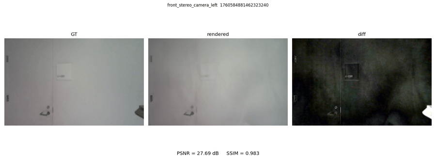

NuRec 渲染工具#
isaacsim.replicator.nurec_utils 是一个实验性模块，用于在 Isaac Sim 中渲染和检查 NuRec（神经重建）USD 资产。它旨在用于验证、回归测试和调试工作流，在这些场景中，需要在已知的相机视角下渲染 NuRec 资产，并与参考图像进行比较。
注意
该模块处于实验阶段。API、命令行行为、支持的 NuRec 格式以及输出文件不保证未来的兼容性。
功能概述#
该模块为 NuRec USD 提供了面向设置、检测、渲染和评估的辅助功能：
Stage 检测和设置辅助功能可识别 NuRec 粒子场、NuRec 体积以及 SPG/PPISP 渲染路径，然后在首次 Hydra 同步之前应用所需的渲染设置。（SPG：Sensor Processing Graph，NVIDIA 基于 CUDA 的 ISP 框架；PPISP：基于物理的感知图像信号处理，一种基于 SPG 构建的学习型光度处理管线。）
渲染辅助功能可在已编写的传感器装置关键帧或显式 TUM 格式相机姿态处捕获帧（TUM：一种源自 TU Munich RGB-D 基准测试的纯文本轨迹格式，其中每一行都是
timestamp tx ty tz qx qy qz qw，且四元数采用xyzw顺序）。它们会写入图像以及一个manifest.json，该文件记录 Stage、相机、时间戳、渲染图像路径和相机位置。相机/渲染产品辅助功能处理两种主要的 NuRec 捕获路径：已编写的 SPG 渲染产品和普通相机渲染产品。
USD、姿态、时间戳、图像和采样辅助工具支持验证任务，例如将 GT 时间戳映射到 USD 时间码或读取 TUM 轨迹。
指标和绘图辅助工具计算 PSNR、SSIM、平均绝对差、图像差异、对比面板、指标图表和姿态热力图。
渲染与 GT 对比工作流中提供计时插桩，用于细分阶段加载、GT 镜像、设置、渲染和评估时间。
概览#
目标 |
主要输入 |
主要输出 |
|---|---|---|
渲染记录的传感器装置视图 |
NuRec USD、相机名称、纳秒时间戳文件 |
RGB 帧和 |
渲染外部视点 |
NuRec USD、相机名称、TUM 姿态文件 |
RGB 帧和 |
将渲染结果与 GT 进行比较 |
NuRec USD、GT 图像树、可选阈值 |
PSNR、SSIM、平均绝对差、面板、图表和姿态热力图 |
支持的 NuRec 资产#
这些工具支持以下 NuRec USD 类型的本地路径和 omniverse:// URL：
具有已编写渲染产品的 SPG/PPISP NuRec 资产。
不含 PPISP 的普通粒子场 / 高斯泼溅 NuRec 资产。
普通 NuRec 体积资产。
SPG/PPISP 资产需要单 GPU 渲染和 omni.rtx.spg 扩展。普通粒子场和体积资产不需要 omni.rtx.spg，但在首次渲染更新前仍需要执行 NuRec 设置步骤，以确保一致地应用高斯色调映射及相关设置。
特定资产的渲染行为#
资产类型 |
检测信号 |
渲染路径 |
所需处理方式 |
|---|---|---|---|
SPG/PPISP 粒子或体积 |
一个 prim 编写了 |
使用资产中编写的 SPG 渲染产品。PPISP 拥有光度路径，因此捕获使用直通曝光。 |
启动单 GPU，启用 |
普通粒子场 / 高斯泼溅 |
一个 prim 类型名称以 |
从相机 prim 创建渲染产品，并通过带有编写曝光的标准色调映射路径进行渲染。 |
启动单 GPU，并在首次 Hydra 同步之前保持高斯色调映射启用。 |
普通 NuRec 体积 |
一个 prim 是 |
从相机 prim 创建渲染产品，并通过标准 NuRec 路径进行渲染。 |
启动单 GPU，并在首次渲染更新之前调用 NuRec 设置步骤。 |
关键帧渲染需要具有编写 rig 关键帧和 stage 时间元数据的传感器 rig。姿态渲染使用显式 TUM 相机姿态，不需要与 rig 匹配的时间戳。
启动和渲染设置#
某些设置是启动时的先决条件，而其他设置由 setup_for_rendering(stage) 在 stage 打开后且在首次 Hydra 同步之前应用。提供的脚本为您处理这两个阶段。
设置 |
适用于 |
设置位置 |
用途 |
|---|---|---|---|
|
SPG/PPISP 资产 |
启动参数，或在从自定义脚本渲染之前启用。 |
加载 Kit 的 RTX 传感器处理图框架，以便带有 |
|
所有 NuRec 资产 |
启动参数。 |
强制使用单 GPU 渲染。NuRec 设置会将多 GPU 渲染报告为未满足的启动先决条件。 |
|
SPG/PPISP 资产 |
直接启动参数，或 |
为资产的已编写渲染产品启用 SPG 执行。 |
|
SPG/PPISP 资产 |
直接启动参数，或 |
防止引擎 NuRec 后处理路径在 PPISP 之上运行，因为 PPISP 已经是光度权威。 |
|
SPG/PPISP 高斯泼溅资产 |
直接启动参数，或 |
在高斯泼溅图中保留高斯色调映射（不绕过），以便泼溅 RGB 遵循视口/sRGB 路径。普通（非 PPISP）高斯泼溅保持引擎默认设置。 |
渲染 NuRec 导出#
nurec 独立示例渲染 NuRec 导出，并写入每个相机的帧以及描述它们的 manifest.json。该脚本位于 source/standalone_examples/nurec/nurec_render.py 中，并使用捆绑的 ./python.sh 解释器运行。
它会自动检测导出是否使用 PPISP 进行训练：PPISP 导出通过其已编写的 RenderProduct 以直通曝光进行渲染，而普通 NuRec 导出则在资产的相机上创建 RenderProduct，并通过标准色调映射管线以已编写的曝光进行渲染。
您可以通过两种方式渲染 NuRec 导出：
姿态 - 将相机放置在以 TUM 轨迹格式提供的显式世界姿态中。这适用于任何导出，并且不需要传感器装置。时间戳是符号性的，仅用于命名输出帧。
Keyframe - 在请求的时间戳处重放导出的传感器装置关键帧。这是捕获的训练姿态，因此要求导出文件包含传感器装置；如果没有，脚本会报告错误并退出。
先决条件#
已构建的 Isaac Sim 和支持 CUDA 的 GPU。
NuRec 导出文件，例如
ParticleField或体积阶段。
渲染显式姿态#
为每个相机提供一个 TUM 轨迹文件。每行格式为 timestamp tx ty tz qx qy qz qw，其中四元数采用 xyzw 顺序。
./python.sh source/standalone_examples/nurec/nurec_render.py poses \
--stage <export>/default.usda --output /tmp/nurec_out \
--cameras front_stereo_camera_left --poses front_left.tum
渲染传感器装置关键帧#
为每个相机提供一个时间戳文件，每行包含一个整数纳秒时间戳。每个帧在 --keyframe-tolerance-us 范围内，在与时间戳匹配的传感器装置关键帧处进行渲染。
./python.sh source/standalone_examples/nurec/nurec_render.py keyframes \
--stage <export>/default.usda --output /tmp/nurec_out \
--cameras front_stereo_camera_left --timestamps front_left_ts.txt
配置#
渲染质量参数来自 config/nurec_config.yaml，并可通过 --config 进行覆盖。每次运行的输入参数 - --stage、--output、--cameras、--timestamps、--poses、--resolution 以及关键帧匹配窗口 --keyframe-tolerance-us - 是命令行参数，而非配置项。
键 |
含义 |
|---|---|
|
每帧的路径追踪累积刻度数。值越高，收敛效果越干净，但渲染速度越慢。 |
|
对于 PPISP 导出，在阶段打开后且首次 Hydra 同步前应用的运行时 |
|
对于普通 NuRec 导出，在阶段打开后且首次 Hydra 同步前应用的运行时 |
与真实值比较#
将渲染帧与真值（GT）图像进行比较的操作由回归测试 source/standalone_examples/testing/nurec/test_nurec_render_vs_gt.py 执行。该测试在每个 GT 时间戳处渲染每个导出文件，并计算峰值信噪比（PSNR）、结构相似性指数度量（SSIM）和图像差异指标。该测试还可以生成 GT | rendered | diff 面板和指标图以供检查。


GT 目录树必须按相机名称组织：
gt_images/
front_stereo_camera_left/
1760584881462323240.png
1760584885595538204.png
front_stereo_camera_right/
1760584881462323240.png
每个文件名主干是一个纳秒时间戳，且每个相机目录必须与 NuRec USD 中的相机/渲染产品名称匹配。图像可以是 .png、.jpg 或 .jpeg。对于每个时间戳，测试会在 keyframe_tolerance_us 范围内找到最近的已编写传感器装置关键帧，渲染该关键帧，并将渲染结果与具有相同相机和时间戳的 GT 图像进行比较。
此 GT 比较所使用的相机姿态编码在 NuRec USD 的传感器装置关键帧中。阶段时间元数据将 USD 时间码映射回录制时间戳。如果需要渲染任意外部相机姿态，请结合 TUM 文件使用 nurec_render.py poses。
运行一次性本地 GT 目录树而无需编辑配置：
./python.sh source/standalone_examples/testing/nurec/test_nurec_render_vs_gt.py \
--stage /path/to/scene.usdz \
--gt-root /path/to/gt_images \
--cameras front_stereo_camera_left \
--num-samples 20 \
--save-images --save-plots \
--out-dir /tmp/nurec_eval
要添加可复用的用例，请在 source/standalone_examples/testing/nurec/config/nurec_eval_test.yaml 中添加一个条目：
cases:
- name: my_scene
stage: /abs/path/to/scene.usdz
gt_root: /abs/path/to/gt_images
cameras:
- front_stereo_camera_left
num_samples: 20
output_parent_dir: ../_out/my_scene
keyframe_tolerance_us: 1000
thresholds:
min_psnr: 25.0
min_ssim: 0.90
然后仅运行该用例：
./python.sh source/standalone_examples/testing/nurec/test_nurec_render_vs_gt.py \
--config source/standalone_examples/testing/nurec/config/nurec_eval_test.yaml \
--case my_scene --save-images --save-plots
对于 stage，请使用绝对本地路径或 omniverse:// URL。gt_root 可以是绝对本地路径、omniverse:// URL 或相对于配置文件的本地路径。output_parent_dir 应为本地输出目录，可以是绝对路径或相对于配置文件的路径。设置 num_samples: null 以渲染每个 GT 图像。当你希望进行检查而不需要固定的通过/失败门槛时，省略 thresholds，或在命令行中使用 --min-psnr / --min-ssim 进行覆盖。
直接启动 Isaac Sim#
提供的 nurec_render.py 和 test_nurec_render_vs_gt.py 脚本以单 GPU 渲染模式启动，启用实用工具扩展，在渲染前启用 omni.rtx.spg，并在打开舞台后调用 NuRec 设置辅助函数。直接启动 Isaac Sim 时，请使用以下命令之一。在打包安装的 Isaac Sim 中，请使用 ./isaac-sim.sh 代替 _build/linux-x86_64/release/isaac-sim.sh。
SPG/PPISP 粒子或体积资产：
_build/linux-x86_64/release/isaac-sim.sh \
--/renderer/multiGpu/enabled=false \
--/rtx/spg/enabled=true \
--/omni/rtx/nre/compositing/disableNuRecPostProcessings=true \
--/rtx/rtpt/gaussian/skipTonemapping/enabled=false \
--enable omni.rtx.spg
普通粒子场 / 高斯泼溅资产：
_build/linux-x86_64/release/isaac-sim.sh \
--/renderer/multiGpu/enabled=false \
--/rtx/rtpt/gaussian/skipTonemapping/enabled=false
普通 NuRec 体积资产：
_build/linux-x86_64/release/isaac-sim.sh \
--/renderer/multiGpu/enabled=false \
--/rtx/rtpt/gaussian/skipTonemapping/enabled=false